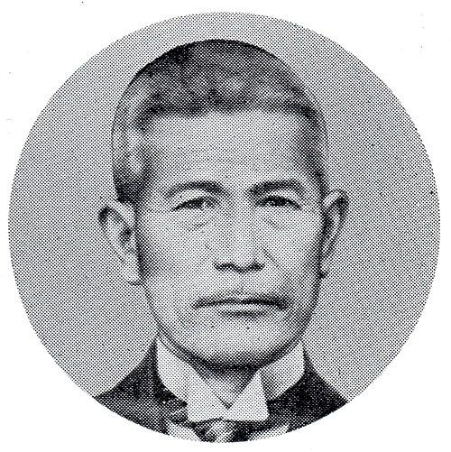
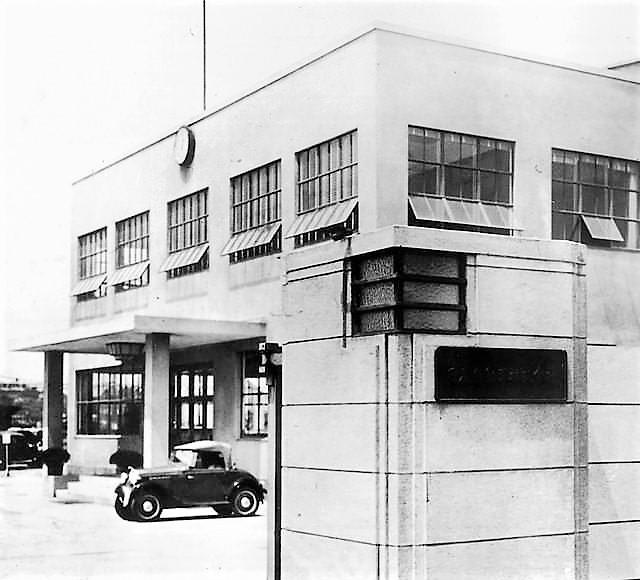
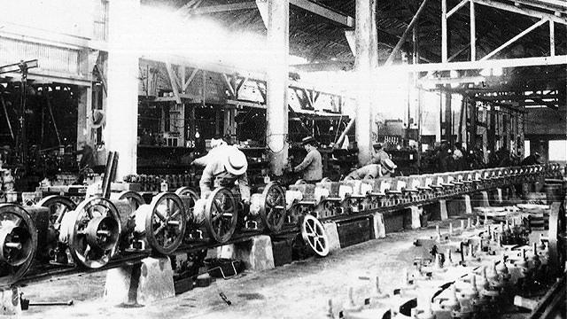
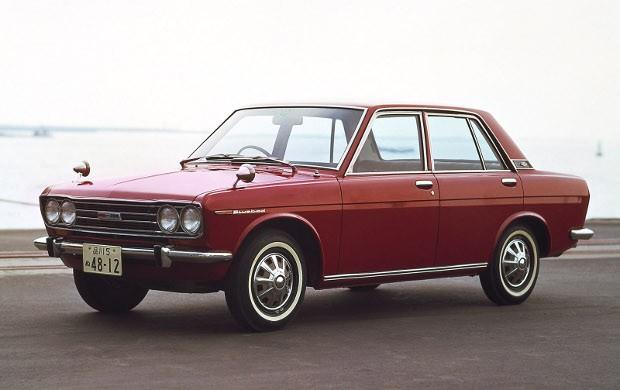
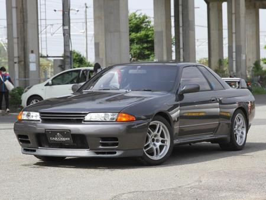
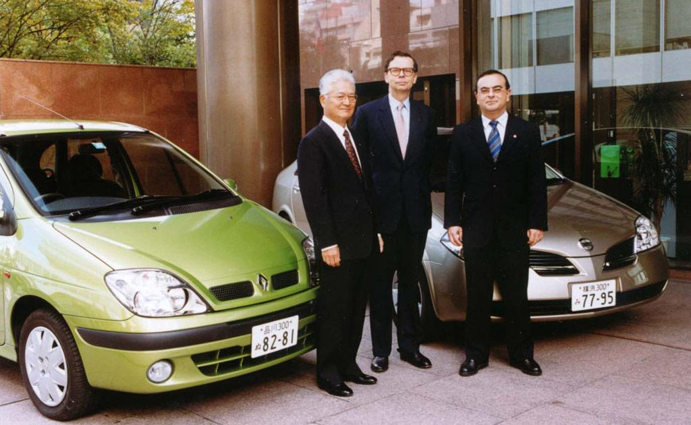
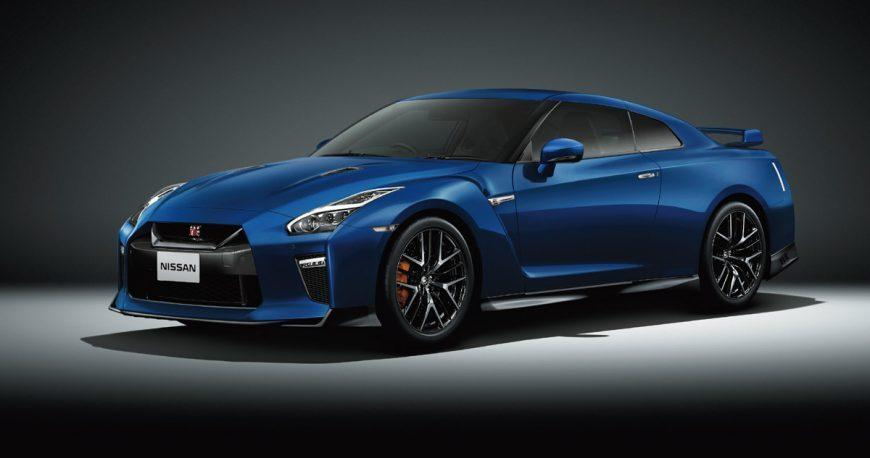
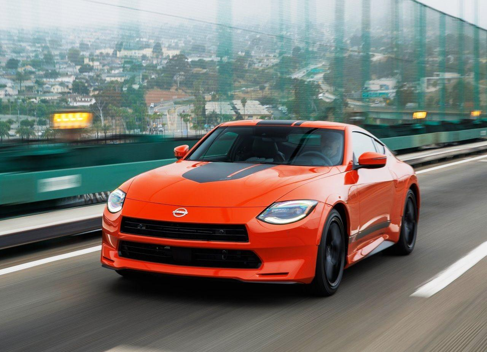
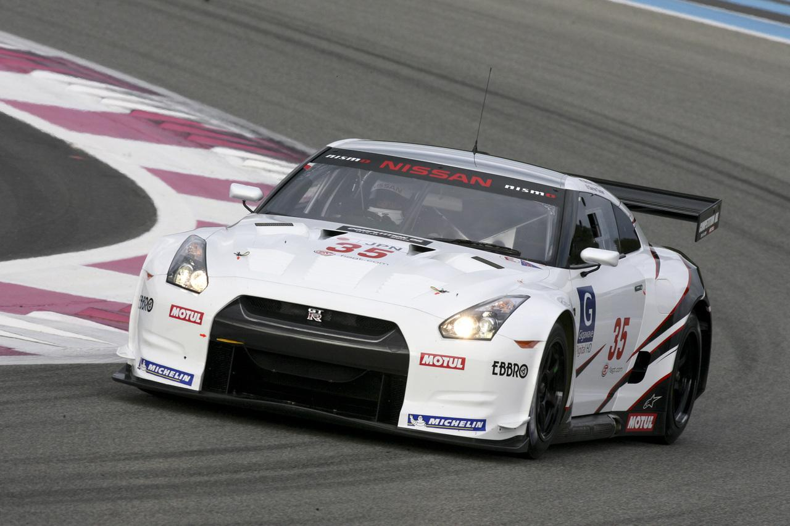
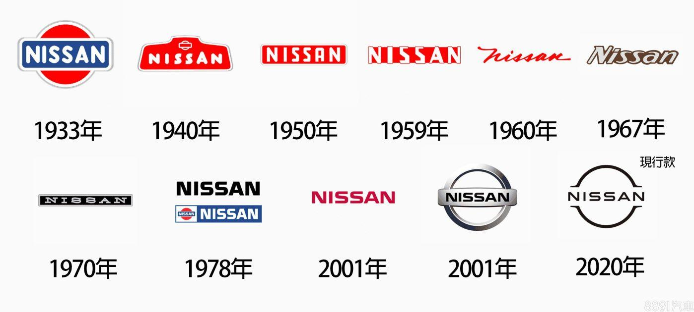

En 1911, Masujiro Hashimoto fonde Kaishinsha Motor Car Works à Tokyo, l'une des premières entreprises automobiles japonaises. En 1914, l'entreprise construit sa première voiture, appelée DAT, un nom formé à partir des initiales des trois principaux investisseurs : Den, Aoyama et Takeuchi. Ces véhicules sont encore produits en petites quantités, mais ils marquent le début de l'industrie automobile japonaise.

En 1933, une nouvelle entreprise est créée sous le nom de Jidosha Seizo Co.. L'année suivante, elle prend officiellement le nom de Nissan Motor Co., Ltd. La marque Datsun, dérivée du nom DAT, est utilisée pour les voitures particulières. Nissan construit alors sa première grande usine automobile à Yokohama, qui devient le cœur de sa production.

Pendant la Seconde Guerre mondiale, Nissan suspend presque totalement la production de voitures civiles pour fabriquer des camions militaires, des moteurs et du matériel destiné à l'armée japonaise. À la fin de la guerre, les usines sont fortement touchées et l'entreprise doit reconstruire ses activités dans un Japon en pleine reconstruction.

Après la guerre, Nissan reprend progressivement la fabrication de voitures destinées au grand public. En 1959, la Datsun Bluebird rencontre un grand succès grâce à sa fiabilité et à son prix abordable. Quelques années plus tard, Nissan commence à exporter ses véhicules vers les États-Unis et l'Europe, où ils gagnent rapidement une réputation de voitures robustes, économiques et faciles à entretenir.

En 1969, Nissan lance la Datsun 240Z, une voiture de sport élégante, performante et relativement abordable. Elle connaît un immense succès dans le monde entier. Durant les années 1980, Nissan présente plusieurs modèles devenus mythiques :
Ces modèles renforcent l'image sportive de la marque.

Au cours des années 1990, Nissan connaît de graves difficultés financières. Les ventes baissent et l'entreprise accumule d'importantes dettes. En 1999, Nissan conclut une alliance avec Renault. Cette alliance est dirigée par Carlos Ghosn, qui met en place un vaste plan de redressement. Grâce à ces réformes, Nissan retrouve rapidement la rentabilité et redevient un acteur majeur de l'automobile mondiale.

Au XXIᵉ siècle, Nissan lance plusieurs modèles très populaires. Parmi eux :
Nissan investit fortement dans les technologies électriques et les systèmes d'aide à la conduite.

Aujourd'hui, Nissan poursuit sa transition vers les véhicules électriques et hybrides. Les modèles récents comprennent :
Nissan participe également au championnat Formula E, consacré aux voitures électriques, et continue de développer des technologies de conduite autonome.

Même si Nissan est surtout connue pour ses voitures de série, la marque possède aussi une riche histoire en compétition. La Skyline GT-R domine plusieurs championnats de tourisme au Japon. La GT-R participe à de nombreuses courses d'endurance, tandis que Nissan est aujourd'hui engagée en Formula E, où elle développe de nouvelles technologies destinées aux futurs véhicules électriques.

